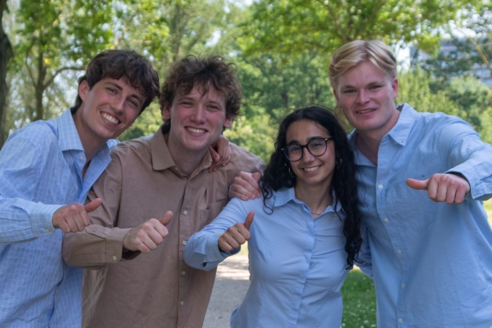
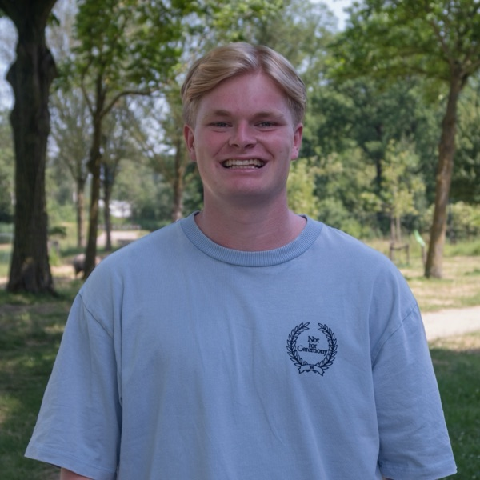
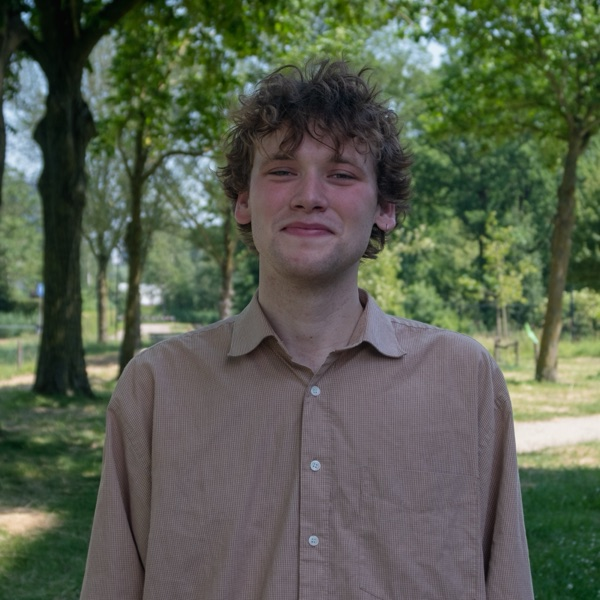

About us.
Most students don't know yet what they want to do. That's not something to sort out before you start, it's the reason to start: experience is how you find out. Impact Connect is here so you can get that experience beside your studies. We hand-pick internships, thesis placements, events and programmes, and help you find the one that turns what you study into what you do.
Created by students and supported by Utrecht University, we work differently from a job board: this site is here to show you what's possible and get you excited. The real matching happens in a conversation: you tell us what you actually want, and we point you to the programmes, places and people worth your time. Where an introduction helps, an alumni or a partner, we make it ourselves.

Why we exist.
Ambition is rarely the problem for students. Knowing where to take it is. Four things get in the way.
Most students don't know yet what they want to do, which makes it hard to know what to look for. You find that out by trying something, but trying something is exactly the part that's hard to arrange on your own.
Internships, theses, jobs and programmes live across dozens of websites, newsletters and word-of-mouth. There's no single place to look.
Many of the best opportunities have deadlines students only hear about after they've passed, if they hear about them at all.
And even when you find something, it's hard to tell whether it fits your level and your interests, especially when you're still working out what those are.
The people you'll meet.
We're students too, we've walked the same path. Book an appointment and you'll be talking to one of us.


Contact
Send us a message.
A question, an idea, an event we should know about, or you would simply rather write than fill in the appointment form. Tell us what is on your mind and one of us gets back to you.
- contact@impactconnectutrecht.com
- We usually reply within a few days